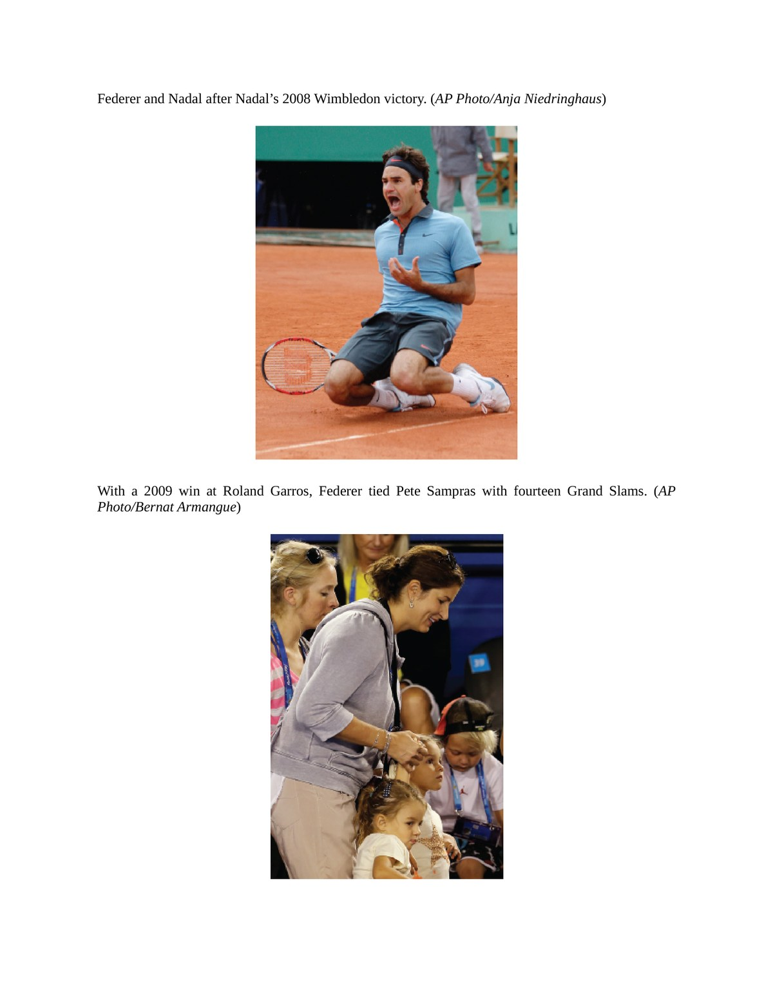
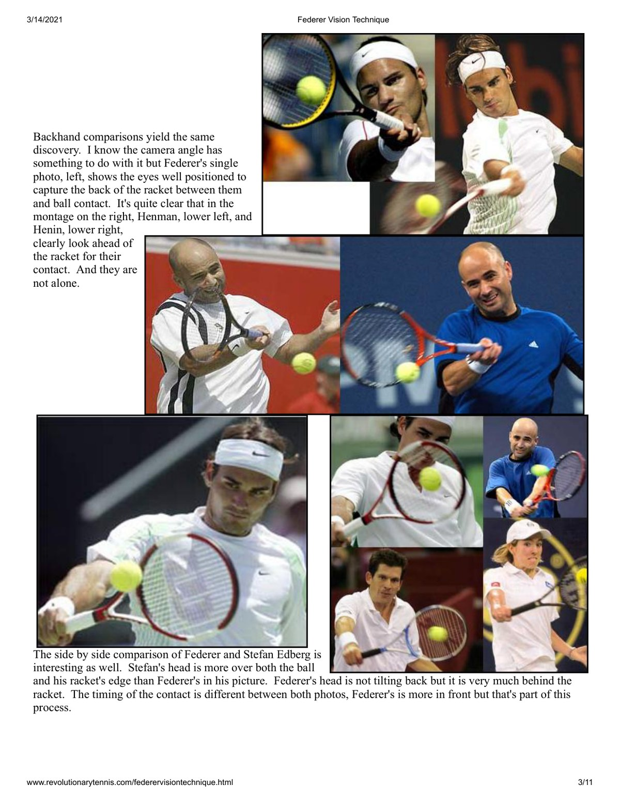
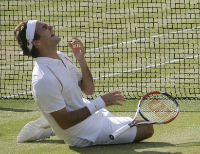
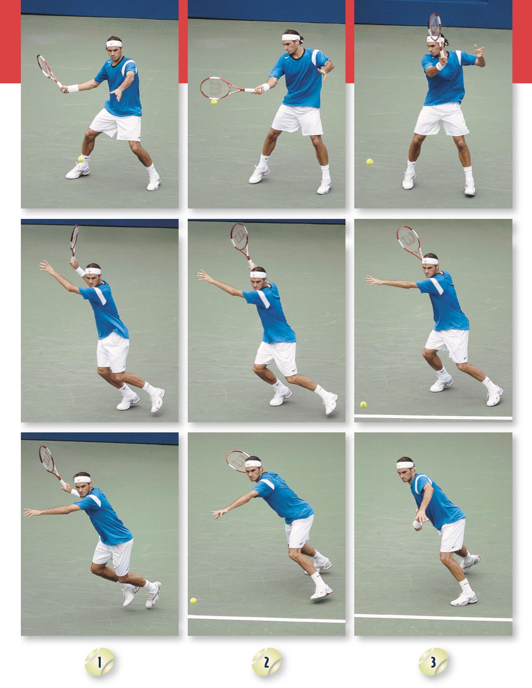
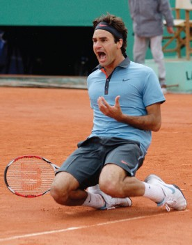
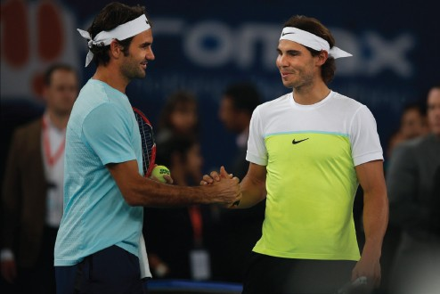

Phần I: Khởi Đầu Của Huyền Thoại & Sự Va Chạm Giữa Hai Thế Giới Đối Nghịch
Bối cảnh lịch sử Sân Trung Tâm Wimbledon 2008, sự đối lập triệt để giữa Apollo Thụy Sĩ và Đấu sĩ Manacor, đòn phủ đầu sấm sét trong ván một
1. Buổi Chiều Định Mệnh Trên Sân Trung Tâm Wimbledon 2008
Vào chiều Chủ nhật ngày 6 tháng 7 năm 2008, hai vận động viên kiệt xuất nhất của kỷ nguyên quần vợt đương đại bước ra thảm cỏ linh thiêng của Sân Trung Tâm Câu lạc bộ Toàn Anh (All England Club).
Bầu không khí London đặc quánh hơi ẩm của những đám mây xám xịt báo hiệu mưa bão.
Nhưng phía dưới sân cỏ, sự căng thẳng điện giật giữa hai con người lại bắt nguồn từ một cuộc đối đầu lịch sử mang tầm vóc sử thi.
Roger Federer khi ấy đang đứng trên đỉnh cao quyền lực tối thượng.
Tay vợt hai mươi sáu tuổi người Thụy Sĩ đã thống trị ngôi số một thế giới suốt hai trăm ba mươi mốt tuần liên tiếp — một kỷ lục vô tiền khoáng hậu.
Anh đã vô địch Wimbledon năm lần liên tiếp từ năm 2003 đến năm 2007 và sở hữu chuỗi sáu mươi lăm trận bất bại liên tục trên mặt sân cỏ.
Nếu giành chiến thắng trong trận chung kết này, Federer sẽ vượt qua huyền thoại Bjorn Borg để xác lập kỷ lục sáu chức vô địch Wimbledon liên tiếp, chính thức khắc tên mình vào vị trí tay vợt vĩ đại nhất mọi thời đại.
Đứng ở phần sân đối diện là Rafael Nadal — chàng trai hai mươi hai tuổi đến từ hòn đảo Mallorca ngập tràn nắng gió của Tây Ban Nha.
Nadal đã bốn lần liên tiếp thống trị giải Roland Garros trên mặt sân đất nện Paris, trong đó có chiến thắng hủy diệt trước chính Federer tại trận chung kết một tháng trước đó.
Suốt ba năm ròng rã, Nadal kiên định bám đuổi phía sau Federer ở vị trí số hai thế giới.
Hai trận chung kết Wimbledon trước đó vào năm 2006 và 2007 đều khép lại với phần thắng thuộc về Federer, nhưng khoảng cách giữa họ ngày càng bị thu hẹp sau từng ván đấu.
Năm 2008, Nadal không còn đến London với tư cách một kẻ học việc trên mặt sân cỏ. Chàng trai trẻ người Tây Ban Nha đến đây để đoạt lấy vương miện.

2. Hai Triết Lý Quần Vợt Đối Nghịch Tuyệt Đối: Apollo Đối Đầu Dionysus
Điều làm cho trận chung kết Wimbledon 2008 trở thành một kiệt tác thể thao không chỉ nằm ở đẳng cấp chuyên môn thượng thừa, mà còn ở sự tương phản triệt để về phong cách, nhân cách và triết lý sống giữa hai nhân vật chính.
Tác giả L. Jon Wertheim đã ví cuộc so tài này như sự va chạm thần thoại giữa thần Apollo và thần Dionysus.
Roger Federer đại diện cho vẻ đẹp cổ điển, trật tự và sự thanh tao hoàn mỹ của trường phái nghệ thuật.
Anh bước vào sân trong chiếc áo khoác thêu chỉ vàng quý phái của thương hiệu Nike, mang phong thái điềm đạm của một quý tộc Basel.
Lối chơi của Federer mượt mà như một vũ công ba-lê lướt đi trên không trung: bước chân thanh thoát không phát ra tiếng động, những cú vung vợt một tay tự nhiên như hơi thở và cơ thể dường như không bao giờ đổ một giọt mồ hôi.
Ngược lại, Rafael Nadal là hiện thân của sức mạnh nguyên bản, bản năng đấu sĩ và cường độ thể lực mãnh liệt.
Rafa xuất hiện với chiếc áo ba lỗ sát nách để lộ bắp tay cuồn cuộn gân guốc, chiếc quần lửng pirate qua đầu gối và mái tóc dài bồng bềnh buộc băng đô.
Trước khi bước vào trận đấu, Nadal luôn thực hiện hàng loạt nghi thức tâm linh nghiêm ngặt: nhảy chân sáo đập đầu gối vào ngực trong đường hầm, xếp hai chai nước thẳng hàng đến từng milimet tại góc ghế nghỉ, và chạy nước rút ra vạch cuối sân như một mãnh thú bước vào võ đài La Mã.
Cây vợt của Federer là cây cọ vẽ tinh tế tạo nên những đường cong ma thuật; cây vợt của Nadal là chiếc rìu chiến dũng mãnh đập tan mọi hàng phòng ngự.
Chưa từng có một trận chung kết nào trong lịch sử thể thao quy tụ hai hình mẫu vừa đối lập sâu sắc vừa hoàn hảo đến vậy.

3. Ván Một (6-4 cho Nadal): Đòn Phủ Đầu Của Tay Thuận Trái Sấm Sét
Khi trọng tài chính Enric Molina hô vang khẩu lệnh thi đấu, trận chiến thế kỷ chính thức bùng nổ.
Ngay từ những pha bóng đầu tiên, chiến thuật của Nadal đã hiện rõ với sự tàn nhẫn và chính xác tuyệt đối.
Vũ khí hủy diệt của tay vợt người Tây Ban Nha là cú thuận tay tay trái cuộn xoáy cực nặng (Lasso Whip), tạo ra độ xoáy lên tới ba nghìn hai trăm vòng một phút.
Nadal liên tục nhồi những quả bóng xoáy cồng kềnh bay vồng qua mép lưới rồi nảy vọt lên ngang tầm vai hoặc mang tai của Federer.
Đối với một cú trái tay một tay cổ điển như của Federer, tiếp xúc bóng ở độ cao quá vai là một thử thách cơ sinh học vô cùng nghiệt ngã.
Tại bàn đấu thứ ba khi tỷ số đang là một-một, Federer đối mặt với điểm bẻ giao bóng.
Federer tung ra cú giao bóng hiểm hóc, nhưng Nadal đã lùi sâu ra sau vạch cuối sân để thực hiện cú trả bóng chuẩn xác, mở ra một loạt bóng bền giằng co dữ dội.
Federer bị đẩy vào thế phòng ngự bị động và tung cú trái tay rúc lưới. Nadal bẻ bàn giao bóng thành công để vươn lên dẫn trước hai-một!
Khán giả trên Sân Trung Tâm sững sờ trong im lặng.
Trong suốt năm năm thống trị tại Wimbledon, Federer chưa bao giờ để đối thủ bẻ giao bóng sớm và dễ dàng như vậy.
Dù Federer nỗ lực tìm kiếm cơ hội đòi lại bàn giao bóng đã mất, bản lĩnh phòng ngự thép của Nadal đã từ chối mọi nỗ lực của Nhà Vua.
Nadal bảo vệ vững chắc các bàn cầm giao bóng của mình và khép lại ván thứ nhất với tỷ số sáu-bốn sau bốn mươi tám phút thi đấu nghẹt thở.
Tiếng chuông cảnh báo lớn đã gióng lên: ngai vàng Wimbledon của Roger Federer đang đứng trước nguy cơ sụp đổ thực sự.

Phần II: Ván Hai Đầy Giông Bão, Lò Luyện Thép Manacor & Cuộc Cách Mạng Dây Đan Polyester
Cuộc lội ngược dòng chấn động trong ván hai, phương pháp sư phạm khắc nghiệt của chú Toni và vật lý học đằng sau hiệu ứng Snapback
4. Ván Hai (6-4 cho Nadal): Sự Sụp Đổ Bất Ngờ Của Federer Từ Thế Dẫn Trước
Bị dồn vào chân tường sau khi để thua ván thứ nhất, Roger Federer bừng tỉnh với tất cả lòng tự kiêu của một nhà vô địch vĩ đại.
Federer khởi đầu ván thứ hai bằng những cú giao bóng sấm sét và những pha dứt điểm thuận tay uy lực xé toạc các góc sân.
Anh bẻ bàn giao bóng đầu tiên của Nadal, nhanh chóng đào sâu cách biệt lên ba-không rồi bốn-một.
Trên các khán đài Sân Trung Tâm, người hâm mộ thở phào nhẹ nhõm. Họ tin rằng trật tự tự nhiên của thế giới quần vợt sân cỏ đã được tái lập và Federer sẽ dễ dàng san bằng tỷ số trận đấu.
Tuy nhiên, đó là lúc bản lĩnh quật cường của Rafael Nadal được bộc lộ ở mức độ đáng kinh ngạc nhất.
Đối với hầu hết các tay vợt đương thời, bị Federer dẫn trước bốn-một trên mặt sân cỏ đồng nghĩa với án tử hình.
Nhưng Nadal chưa bao giờ chấp nhận đầu hàng bất kỳ đường bóng nào.
Nadal kiên trì thiết lập lại hàng phòng ngự thép ở vạch cuối sân, liên tục tung ra những cú trả bóng sâu chạm sát mép vạch vôi.
Tại bàn đấu thứ sáu, Nadal bẻ lại bàn giao bóng của Federer sau một loạt pha đôi công kéo dài hơn hai mươi lần chạm vợt, rút ngắn tỷ số xuống hai-bốn rồi ba-bốn.
Trước sự kiên trì phi nhân tính của đối thủ, nhịp điệu của Federer bắt đầu bị xáo trộn.
Những cú dứt điểm vốn chuẩn xác đến từng milimet của tay vợt người Thụy Sĩ bắt đầu bay chệch dây chỉ vài centimet.
Sự nôn nóng dâng trào kéo theo hàng loạt lỗi tự đánh hỏng.
Nadal thừa thắng xông lên, thắng liền năm bàn đấu ngoạn mục để lật ngược tình thế từ một-bốn thành sáu-bốn trong sự ngỡ ngàng tột độ của toàn bộ khán trường!
Sau một giờ bốn mươi phút thi đấu, Rafael Nadal đã dẫn trước hai-không sau hai ván đấu.
Lịch sử Wimbledon chưa từng chứng kiến một nhà vô địch năm lần liên tiếp nào bị dồn vào miệng vực sâu thẳm đến mức ấy.
5. Triết Lý Manacor & Người Thầy Thép Toni Nadal
Để hiểu được nguồn gốc ý chí chiến đấu bất hoại của Rafael Nadal, cuốn sách của Wertheim dẫn dắt người đọc trở về thị trấn Manacor trên hòn đảo Mallorca.
Ở đó, người chú ruột kiêm huấn luyện viên trọn đời Toni Nadal đã nhào nặn nên một chiến binh độc nhất vô nhị.
Toni không xuất thân từ các học viện quần vợt hoa mỹ; ông là người theo chủ nghĩa khắc kỷ thực tế và nghiêm ngặt đến mức tàn nhẫn.
Từ khi Rafa mới bốn tuổi, Toni đã bắt cháu trai tập luyện trên những mặt sân đất nện nứt nẻ gồ ghề bằng những quả bóng nỉ cũ rách mất độ nảy.
Toni muốn Rafa hiểu rằng thế giới thực tế không bao giờ hoàn hảo, và một đấu sĩ chân chính phải học cách giành chiến thắng trong những điều kiện tồi tệ nhất.
Toni đặt ra những nguyên tắc đạo đức sắt đá không thể lay chuyển: Rafa không bao giờ được phép đập vợt trút giận (trong suốt toàn bộ sự nghiệp chuyên nghiệp, Nadal chưa từng đập vỡ một cây vợt nào), không bao giờ được phàn nàn về thời tiết, gió to hay lỗi nhận định của trọng tài, và sau mỗi buổi tập, Rafa luôn là người tự tay nhặt sạch bóng trên sân.
Quyết định mang tính thiên tài nhất của Toni diễn ra khi Rafa lên mười tuổi.
Mặc dù Rafa thuận tay phải trong mọi hoạt động sinh hoạt hàng ngày (viết chữ, ném bóng, cầm kéo), Toni nhận thấy Rafa đánh những cú thuận tay bằng cả hai tay rất mạnh mẽ.
Nhìn thấy tiềm năng chiến thuật to lớn, Toni đã thuyết phục Rafa chuyển sang chơi quần vợt bằng tay trái.
Cú đánh thuận tay trái với độ cuộn xoáy khủng khiếp nhắm thẳng vào góc trái tay của các đối thủ thuận tay phải chính là nền móng biến Rafael Nadal thành cơn ác mộng lớn nhất trong sự nghiệp của Roger Federer.

6. Cuộc Cách Mạng Công Nghệ: Dây Đan Polyester & Hiệu Ứng Snapback
Bên cạnh sự chuẩn bị thể lực phi thường, trận chung kết 2008 còn đánh dấu sự va chạm giữa hai kỷ nguyên công nghệ vợt và dây đan.
Roger Federer sử dụng cây vợt Wilson Pro Staff với mặt vợt nhỏ chỉ chín mươi inch vuông và bộ dây đan lai kết hợp giữa dây ruột bò tự nhiên (Natural Gut) và dây tổng hợp.
Cấu hình này mang lại cảm giác chạm bóng tinh tế thượng thừa, phục vụ hoàn hảo cho lối đánh tấn công hào hoa cổ điển.
Trong khi đó, Rafael Nadal sử dụng cây vợt Babolat AeroPro Drive với mặt vợt một trăm inch vuông kết hợp bộ dây đan hoàn toàn bằng vật liệu Polyester (Babolat Pro Hurricane Tour / Duralast).
Vật lý học dây đan chứng minh rằng: dây polyester có độ cứng cao và bề mặt trơn nhẵn trượt tự do trên nhau.
Khi Nadal vuốt mặt vợt từ dưới lên trên với tốc độ vung vợt cực đại, các sợi dây dọc bị quả bóng nén chặt và kéo trượt lệch sang một bên.
Ngay trước khi quả bóng rời mặt vợt trong khoảng thời gian bốn phần nghìn giây, các sợi dây polyester trượt bật mạnh trở lại vị trí ban đầu với gia tốc cực lớn.
Hiện tượng này được gọi là "Hiệu ứng Bật trở lại" (Snapback Effect).
Hiệu ứng Snapback truyền thêm hàng nghìn vòng xoay bổ sung vào quả bóng, cho phép Nadal tung ra những cú đánh với toàn bộ sức mạnh cơ bắp mà quả bóng vẫn cắm cong chúc đầu rơi vào trong sân nhờ lực hút khí động học Magnus.
Đây chính là chìa khóa công nghệ giúp lối đánh cuối sân của Nadal làm chủ trận đấu trên mặt sân cỏ nhanh nhất thế giới.
Phần III: Cơn Mưa Mùa Hạ, Sự Tái Sinh & Loạt Tie-Break Nghẹt Thở Nhất Lịch Sử
Khoảng lặng định mệnh trong phòng thay đồ, sự phục hưng của quả giao bóng sấm sét và cú đánh trái tay dọc dây kinh điển cứu Championship Point
7. Ván Ba (7-6 cho Federer): Cơn Mưa Luân Đôn & Sự Thức Tỉnh Kịp Thời
Khi ván thi đấu thứ ba bước sang bàn đấu thứ chín với tỷ số năm-bốn nghiêng về Federer, bầu trời Luân Đôn đột ngột xám xịt và trút xuống một cơn mưa rào mùa hạ nặng hạt.
Trận đấu buộc phải tạm dừng lúc mười sáu giờ bốn mươi lăm phút.
Các nhân viên sân bãi nhanh chóng kéo tấm bạt xanh khổng lồ phủ kín mặt cỏ Sân Trung Tâm.
Hai đấu thủ rút lui vào phòng thay đồ trong suốt tám mươi phút gián đoạn.
Khoảng lặng này chính là chiếc phao cứu sinh vô giá dành cho Roger Federer.
Trong phòng thay đồ, Federer ngồi tĩnh lặng cùng người vợ tương lai Mirka Vavrinec và đội ngũ hỗ trợ.
Anh nhận ra rằng mình không thể tiếp tục đứng sau vạch cuối sân để đôi công với những quả bóng xoáy quái vật của Nadal.
Nếu muốn sống sót, anh phải mạo hiểm tối đa: tung ra những cú giao bóng một hiểm hóc nhất có thể, chủ động bước chân vào trong sân để đón bóng ở điểm cao nhất khi bóng vừa nảy lên, và dứt khoát lên lưới kết thúc điểm số.
Khi cơn mưa tạnh và hai tay vợt trở lại sân cỏ, một Federer hoàn toàn khác xuất hiện.
Anh giữ vững bàn giao bóng của mình, đưa ván đấu vào loạt đấu súng Tie-break cân não.
Trong loạt Tie-break ván ba, Federer tìm lại được thứ vũ khí hủy diệt nhất của mình: quả giao bóng cắm góc chữ T với vận tốc gần hai trăm mười kilômét một giờ.
Federer tung ra liên tiếp bốn cú giao bóng ăn điểm trực tiếp (Aces), giành chiến thắng bảy-năm để rút ngắn tỷ số trận đấu xuống một-hai ván.
Ngọn lửa hy vọng đã bùng cháy trở lại nơi trái tim của Nhà Vua.

8. Ván Bốn (7-6 cho Federer): Loạt Tie-Break Vĩ Đại Nhất Mọi Thời Đại
Ván thứ tư chứng kiến chất lượng chuyên môn được đẩy lên tầm cao chưa từng thấy trong biên niên sử quần vợt thế giới.
Cả hai tay vợt đều thi đấu như những vị thần, không ai để mất một bàn giao bóng nào và kéo nhau vào loạt Tie-break thứ hai liên tiếp.
Loạt đấu súng ván bốn này đã trở thành một truyền thuyết bất tử.
Nadal khởi đầu áp đảo và vươn lên dẫn trước năm-hai, chỉ còn cách chức vô địch đúng hai điểm số.
Nhưng Federer kiên cường gỡ hòa năm-đều.
Tại tỷ số sáu-năm, Nadal có cơ hội kết thúc trận đấu đầu tiên (Championship Point) trên chính lượt giao bóng của mình.
Tuy nhiên, dưới sức ép khổng lồ, cú thuận tay của Nadal đã đưa bóng rúc vào mép lưới trong sự tiếc nuối tột cùng của ban huấn luyện Tây Ban Nha.
Tỷ số được cân bằng sáu-đều rồi bảy-bảy.
Tại tỷ số bảy-tám, Nadal có cơ hội Championship Point thứ hai khi Federer cầm giao bóng.
Khắp Sân Trung Tâm, mười lăm nghìn khán giả nín thở hoàn toàn đến mức có thể nghe thấy tiếng chim hót trên bầu trời Luân Đôn.
Nadal tung ra một cú trả giao bóng hiểm hóc ép Federer dạt sâu sang góc trái sân, rồi lập tức tung cú đánh thuận tay đưa bóng chéo sân và lao nhanh lên lưới để bắt vô-lê dứt điểm chức vô địch.
Đối diện với thất bại trong tích tắc, Federer đã tạo nên một khoảnh khắc kỳ diệu nhất sự nghiệp: từ tư thế rướn người hết cỡ sát góc sân, anh vung cây vợt một tay vẽ nên một đường cong hoàn hảo, đưa quả bóng bay sạt mép ngoài tầm với của Nadal và cắm phập chuẩn xác vào vạch vôi dọc mép sân!
Cả cầu trường Sân Trung Tâm vỡ òa trong tiếng gầm kinh thiên động địa.
Cú bẻ bóng dọc dây thần thánh (Backhand Down-the-Line Passing Shot) đã cứu sống Federer khỏi bờ vực thất bại.
Thừa thắng xông lên, Federer ghi liền hai điểm số tiếp theo để thắng loạt Tie-break với tỷ số mười-tám, chính thức đưa trận chung kết thế kỷ vào ván thứ năm quyết định!

Phần IV: Bản Giao Hưởng Trong Hoàng Hôn & Sự Chuyển Giao Ngai Vàng Lịch Sử
Cuộc chiến sinh tử trong màn đêm chập choạng, khoảnh khắc 21 giờ 15 phút định mệnh và di sản bất tử của trận đấu vĩ đại nhất lịch sử
9. Ván Năm (9-7 cho Nadal): Cuộc Đấu Sinh Tử Khi Bóng Đêm Dần Buông
Bước vào ván thứ năm quyết định, quy tắc thi đấu truyền thống của Wimbledon thời điểm đó không áp dụng loạt Tie-break; hai đấu thủ buộc phải thi đấu cho đến khi có một người tạo được cách biệt hai bàn thắng.
Cơn mưa thứ hai ập đến làm gián đoạn trận đấu thêm ba mươi phút khi tỷ số đang là hai-đều.
Khi hai tay vợt trở lại sân lúc hai mươi giờ, hoàng hôn Luân Đôn đã bắt đầu buông xuống.
Cần nhớ rằng vào năm 2008, Sân Trung Tâm Wimbledon vẫn chưa được lắp đặt mái che di động và hệ thống đèn chiếu sáng nhân tạo (công trình này chỉ hoàn thành vào mùa giải 2009).
Ánh sáng tự nhiên lụi tàn nhanh chóng sau mỗi bàn đấu.
Trọng tài điều hành giải đấu Alan Mills đứng ở góc sân, liên tục nhìn lên bầu trời và đồng hồ đo độ sáng.
Nếu trận đấu hòa tám-đều, ban tổ chức sẽ buộc phải hoãn trận đấu sang ngày thứ Hai vì lý do an toàn thị giác.
Tuy nhiên, cả Federer và Nadal đều từ chối dừng lại. Họ muốn giải quyết số phận của vương triều quần vợt ngay trong buổi tối định mệnh này.
Tỷ số giằng co nghẹt thở: ba-ba, bốn-bốn, năm-năm, rồi sáu-sáu.
Cả hai người đàn ông đều kiệt sức sau hơn bốn tiếng rưỡi chiến đấu với cường độ thể lực đỉnh cao, nhưng ý chí của họ vẫn kiên cường như những tảng đá hoa cương.
Tại bàn đấu thứ mười lăm khi tỷ số là bảy-bảy, bước ngoặt vĩ đại đã xuất hiện.
Nadal tung ra những cú trả giao bóng sâu không tưởng, ép Federer liên tiếp đánh bóng hỏng.
Tay vợt người Tây Ban Nha giành được điểm bẻ giao bóng then chốt để vượt lên dẫn trước tám-bảy, nắm trong tay quyền tự quyết chức vô địch trên chính lượt giao bóng của mình!
10. Khoảnh Khắc Hai Mươi Mốt Giờ Mười Lăm Phút: Ngôi Vương Đổi Chủ
Đồng hồ trên Sân Trung Tâm điểm hai mươi mốt giờ mười lăm phút.
Không gian xung quanh tối đến mức mắt thường khó có thể theo dõi quỹ đạo quả bóng màu vàng nỉ.
Mỗi khi một tay vợt vung vợt, hàng nghìn ánh đèn flash của máy ảnh từ khán đài bùng nổ rực rỡ, biến sân cỏ thành một dải thiên hà lấp lánh giữa màn đêm.
Tại điểm Championship Point thứ tư của trận đấu, Nadal tung ra một cú giao bóng hiểm hóc vào góc trái tay của Federer.
Federer rướn người cứu bóng và thực hiện cú trả bóng ngắn. Nadal lập tức áp sát vạch cuối sân tung cú thuận tay ép đối thủ.
Cú vung vợt thuận tay đáp trả cuối cùng của Federer đã đưa bóng chạm mép lưới rồi rơi xuống phần sân của chính anh.
Trận đấu kết thúc!
Rafael Nadal ngã quỵ xuống mặt cỏ xanh, nằm ngửa dang rộng hai tay nhìn lên bầu trời đêm Luân Đôn trong cơn xúc động tột cùng.
Sau bốn giờ bốn mươi tám phút thi đấu — trận chung kết đơn nam dài nhất trong lịch sử Wimbledon — chàng trai Manacor hai mươi hai tuổi đã chính thức phế truất Nhà Vua năm lần liên tiếp để bước lên đỉnh cao danh vọng.
Nadal trở thành người đàn ông đầu tiên kể từ sau Bjorn Borg năm 1980 giành được cả hai danh hiệu Roland Garros và Wimbledon trong cùng một năm dương lịch.

11. Tinh Thần Thể Thao Tối Thượng & Di Sản Bất Diệt
Khoảnh khắc sau khi tiếng còi kết thúc vang lên cũng là lúc tinh thần thể thao cao thượng được tôn vinh trọn vẹn nhất.
Nadal đứng dậy, bước nhanh về phía lưới để ôm lấy Roger Federer.
Sau đó, Rafa trèo qua các hàng ghế khán đài một cách đầy cảm xúc để ôm chầm lấy cha mẹ, người chú ruột Toni Nadal, rồi tiến về phía khu vực danh dự Hoàng gia để bắt tay chúc mừng Thái tử Felipe và Thái tử phi Letizia của Tây Ban Nha.
Trong buổi lễ trao cúp danh giá, Roger Federer dù đôi mắt ngấn lệ nhưng vẫn giữ phong thái đĩnh đạc của một quý ông chân chính.
Federer phát biểu chân thành trước ống kính truyền hình toàn cầu: "Tôi đã thử mọi cách có thể, chiến đấu đến giọt mồ hôi cuối cùng, nhưng Rafa hoàn toàn xứng đáng với chức vô địch này hơn bất kỳ ai. Anh ấy là một nhà vô địch vĩ đại."
Như nhà văn L. Jon Wertheim đã đúc kết trong cuốn sách: Trận chung kết Wimbledon 2008 không có kẻ chiến bại thực sự.
Đó là một bản giao hưởng anh hùng ca nơi hai con người vĩ đại nhất đã thúc đẩy nhau vượt qua mọi giới hạn thể chất và tinh thần của loài người.
Trận đấu ấy đã định nghĩa lại khái niệm về sự hoàn hảo trong thể thao đỉnh cao và mở ra Kỷ nguyên Hoàng kim rực rỡ nhất trong lịch sử quần vợt nhân loại.
